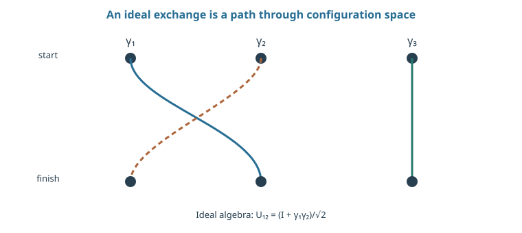
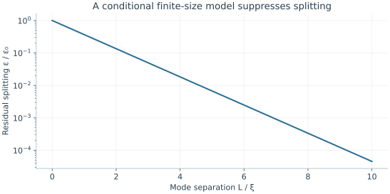

Starting point: Chapters 1–14; physical concepts and approximations are introduced as needed.
Anchor example: Four ideal Majorana modes encoding one qubit in a fixed-total-parity sector.
This lesson includes explanations, worked examples, and problems with solutions. Advanced results whose proofs are outside the chapter are identified explicitly.
Every protection scheme so far is active. A bosonic code, like the repetition code, needs measurements that find errors and operations that undo them. Could the physical states of a material protect information passively instead, by making it invisible to any local disturbance? Such protection is a design goal, not an established hardware capability, so we ask what it would require and how it could be tested.
We first state the condition that local insensitivity means mathematically, and see that an energy gap alone does not supply it. Splitting a fermion's occupation into two halves that can sit far apart gives Majorana operators and an encoding in joint parities. Exchanging those modes then acts on the encoded information, but only with a restricted set of gates. Finally we ask what physical effects undo the protection, and what evidence could distinguish it from other explanations.
Our first question is what it means, precisely, for two states to look identical to every local probe.
15.1 Nonlocal Encoding
Suppose two logical states look identical to every sufficiently local probe. A local disturbance would then have no way to learn or change which logical state is present. What condition expresses this, and what physical system could meet it? Requiring every local operator to act as a multiple of the identity on the encoded space gives the condition. Storing a fermion's occupation in two separated halves then gives a candidate encoding.
15.1.1 Degeneracy and local perturbations
What does "invisible to local probes" mean as mathematics? Let \(P\) project onto a two-dimensional encoded space. Suppose a local disturbance \(O\) satisfies \(POP=c_OP\) for some number \(c_O\). Within the encoded space, \(O\) then acts as a multiple of the identity. It neither distinguishes the two logical states nor rotates between them, at least to first order in \(O\). This is the property we want.
Is an energy gap enough to give it? A gap separates the encoded space from excitations, so a weak disturbance cannot easily create them. But a gap alone does not imply \(POP=c_OP\). A disturbance can act through excited states at higher order, a finite system can split the two encoded energies slightly, and a disturbance that spreads over the whole device is not local. So the encoding, the allowed disturbances, and the boundary conditions must all be stated. We use the condition as a design principle and do not derive a topological phase of matter from it.
15.1.2 Parity and encoded information
Where could information hide from local probes? Consider a fermion mode, a single electron state that by the exclusion principle is either empty or filled. Its lowering operator \(f\) empties it, \(f^\dagger\) fills it, and \(f^\dagger f\) is its occupation, 0 or 1. Because a mode cannot be filled twice, \(f^2=0\), and the operators obey \(ff^\dagger+f^\dagger f=I\). The combination \(\{A,B\}=AB+BA\) is called the anticommutator.
Can the occupation be split into two parts? Define \(\gamma_1=f+f^\dagger\) and \(\gamma_2=-i(f-f^\dagger)\). Both are Hermitian, and direct multiplication using \(f^2=0\) gives \(\gamma_j^2=I\) and \(\gamma_1\gamma_2+\gamma_2\gamma_1=0\), that is \(\{\gamma_j,\gamma_k\}=2\delta_{jk}I\). Conversely \(f=(\gamma_1+i\gamma_2)/2\), and
\[i\gamma_1\gamma_2=2f^\dagger f-I.\]
So the occupation, through its parity \(i\gamma_1\gamma_2=\pm1\), is a joint property of the two halves. Operators with these properties are called Majorana operators. Certain proposed materials are predicted, in idealized models, to place \(\gamma_1\) and \(\gamma_2\) at opposite ends of a wire. A probe near one end then sees only one half and cannot read the occupation.
How many modes make a qubit? One pair has occupation 0 or 1, but physical processes that conserve the total number of electrons modulo two fix the parity, which leaves only one state. Four Majorana operators give two occupations. Fixing even total parity leaves \(\ket{00}\) and \(\ket{11}\), a two-state encoded space. These are joint occupations, not separately controllable local qubits. The algebra defines an ideal encoding. Producing modes with these properties, keeping the parity fixed, and making the right joint measurements are separate experimental requirements.
Problem 15.1. Why are four ideal Majorana modes used for one fixed-parity qubit?
Worked solution
Two fermionic occupations give four basis states. Fixing their total parity leaves two alternatives. A single pair with fixed parity leaves only one, insufficient for a qubit.
15.2 Topological Operations
Information hidden from local probes is also hidden from local controls. How can we operate on it at all? Exchanging two Majorana modes acts on the encoded space through their product, and exchanges in different orders give different results. Joint-parity measurements supply readout, but the operations obtainable this way are not universal.
15.2.1 Exchange and braiding
What does moving two modes around each other do? We quote the ideal result that exchanging modes \(j\) and \(k\) in one orientation acts as \(U_{jk}=\exp(\pi\gamma_j\gamma_k/4)\). An exchange of this kind is called a braid. Since \((\gamma_j\gamma_k)^2=-\gamma_j^2\gamma_k^2=-I\), the even and odd split of the exponential gives
\[U_{jk}=\frac{I+\gamma_j\gamma_k}{\sqrt2}.\]
Reversing the exchange changes the sign in the exponent.
Why can exchanges compute? Neighbouring exchange generators do not commute: \((\gamma_1\gamma_2)(\gamma_2\gamma_3)=\gamma_1\gamma_3\), whereas the reverse order gives \(-\gamma_1\gamma_3\). So the order of exchanges changes the operation on the encoded information. The physical motion must keep the system in its gapped ground space, be slow enough not to create excitations, and avoid phases from any residual splitting. A trajectory diagram names an exchange sequence; it does not establish protection, or even that the required modes exist.
15.2.2 Readout and universality
How is the encoded information read? By a joint-parity measurement, which distinguishes the eigenvalues of an operator such as \(i\gamma_1\gamma_2\). Measuring a parity also prepares a known sector, and suitable sequences of parity measurements can perform encoded operations. The local detectors and couplers that make these measurements must not themselves introduce the dominant faults.
Do braids give every gate? No. We quote the result that Majorana braids generate only Clifford operations, a restricted gate set. Universal computation needs an additional resource, such as a non-Clifford gate or a specially prepared state, and its accuracy must be analysed separately. A protected exchange, an accurately measured parity, and a universal protected processor are successively stronger claims.

Time runs downward. Dashed and solid trajectories distinguish the two exchanged modes; the stationary third mode shows why a subsequent neighboring exchange can have order-dependent action. This is an ideal braid diagram, not evidence for a device.
Problem 15.2. Does a protected braid imply a universal processor?
Worked solution
No. The generated gate set may be restricted. State preparation, readout, and any additional non-braiding gates require independent demonstrations and error budgets.
15.3 Physical Requirements
The ideal algebra assumes an infinite gap, infinitely separated modes, and a parity that never changes. Which physical effects break those assumptions, and how large are they? Temperature and stray excitations change the parity, and finite separation splits the encoded energies. Testing protection then means measuring how such errors change when the design parameters change.
15.3.1 Gaps, poisoning, and finite size
How well does a gap suppress excitations? If an unwanted excitation costs energy \(\Delta\), its equilibrium weight contains \(e^{-\Delta/(k_BT)}\). Raising the gap-to-temperature ratio from five to ten lowers this factor from 0.00674 to 0.0000454. The estimate assumes equilibrium. Excitations that arrive from outside, out of equilibrium, can still enter the device and change its parity. This is called quasiparticle poisoning, and the Boltzmann factor says nothing about it.
What does finite separation cost? For modes a distance \(L\) apart, a model can have a residual splitting \(\epsilon(L)\sim\epsilon_0e^{-L/\xi}\), possibly with oscillating factors, where \(\xi\) is a localization length. During a storage time \(t\) this gives an unwanted phase \(\epsilon(L)t/\hbar\). A small splitting is useful only relative to the storage time and the target error. So the gap, the poisoning rate, the finite-size splitting, and the extra operations needed for universality all belong in one error budget.
15.3.2 Evidence and limitations
What observation would show that protection is real? A single spectral feature can support a hypothesis about low-energy states, but other explanations can produce the same feature. A protection claim must make predictions its competitors do not. Parity should behave as predicted, the signal should depend on geometry and temperature in the predicted way, and the proposed control sequence should be reproducible.
The strongest form of the claim is a measured relation. For example, an encoded phase error should fall in the predicted way as the modes are moved further apart under otherwise matched conditions. Readout and the selection of accepted runs must be accounted for in that comparison. Our development has given an ideal algebra and the conditions for it to matter; it does not establish that the microscopic ingredients, protected braids, or a universal implementation exist.

The exponential is an illustrative finite-size model; real systems can include oscillations and other terms. Reduced splitting alone does not establish protected operations or suppress nonequilibrium parity changes.
Problem 15.3. Compare Boltzmann factors for \(\Delta/k_BT=5\) and 10.
Worked solution
They are about 0.00674 and 0.0000454. Their ratio is about 148. This calculation estimates thermal suppression only, not a measured parity lifetime.
Whatever the encoding, it runs inside refrigerators or vacuum chambers, driven by classical electronics. Do those classical systems merely serve the qubits, or do they limit what the processor can do?
Worked model check. If the residual splitting is epsilon0 exp(−L/xi), how does increasing L by 2xi change the unwanted phase in a fixed storage time?
Worked solution
It multiplies splitting and phase by \(e^{-2}\simeq0.1353\). This conditional model says nothing about poisoning, control errors, or whether the assumed protected modes exist.
These exercises draw on the whole chapter. Attempt each question before opening a hint, explain your reasoning, then compare it with the worked solution.
Using \(\gamma_j^\dagger=\gamma_j\) and \(\{\gamma_j,\gamma_k\}=2\delta_{jk}\), show that \((i\gamma_1\gamma_2)^2=I\). What are the possible measurement outcomes of the joint parity \(i\gamma_1\gamma_2\), and how do they relate to the occupation \(f^\dagger f\)?
Hint 1
\(\gamma_1\gamma_2=-\gamma_2\gamma_1\) and \(\gamma_j^2=I\).
Hint 2
\(i\gamma_1\gamma_2=2f^\dagger f-1\).
Worked solution
\((i\gamma_1\gamma_2)^2=-\gamma_1\gamma_2\gamma_1\gamma_2=\gamma_1\gamma_1\gamma_2\gamma_2=I\), using one anticommutation. So the eigenvalues are \(\pm1\). Since \(i\gamma_1\gamma_2=2f^\dagger f-1\), outcome \(-1\) means occupation \(0\) and \(+1\) means occupation \(1\). A parity measurement reads a joint property of two modes; neither mode alone carries the information.
The equilibrium weight of an unwanted excitation is \(e^{-\Delta/k_BT}\). For \(\Delta/k_BT=7\), evaluate it, and find the gap in μeV needed at \(20\) mK, using \(k_B\approx86\ \mu\)eV/K. What does this number not guarantee?
Hint 1
\(k_BT=86\times0.02\approx1.7\ \mu\)eV.
Hint 2
Equilibrium factors say nothing about excitations injected from outside.
Worked solution
\(e^{-7}\approx9\times10^{-4}\), requiring \(\Delta\approx7\times1.7\approx12\ \mu\)eV at \(20\) mK. This bounds thermally excited quasiparticles in equilibrium only. Nonequilibrium quasiparticles, generated by radiation, cosmic rays, or control pulses, can poison the parity at rates far above this estimate.
For the ideal braid \(U=(I+\gamma_1\gamma_2)/\sqrt2\), compute \(U^2\) and \(U^4\). How many exchanges return the encoded state to itself up to a global phase?
Hint 1
\((\gamma_1\gamma_2)^2=-I\).
Hint 2
Expand \((I+\gamma_1\gamma_2)^2\).
Worked solution
\(U^2=\frac12(I+2\gamma_1\gamma_2+(\gamma_1\gamma_2)^2)=\frac12(2\gamma_1\gamma_2)=\gamma_1\gamma_2\), and \(U^4=(\gamma_1\gamma_2)^2=-I\). Four exchanges in the same orientation give \(-I\), a global phase; two exchanges give \(\gamma_1\gamma_2\), a nontrivial operation on the encoded space.
A finite-size splitting follows \(\epsilon(L)=\epsilon_0e^{-L/\xi}\) with \(\epsilon_0/h=10\) MHz and \(\xi=100\) nm. (a) Find \(\epsilon/h\) and the unwanted phase \(2\pi(\epsilon/h)t\) for \(t=1\) ms at \(L=1\) μm. (b) Repeat at \(L=2\) μm. (c) What does the comparison show, and what does it not show?
(a) \(\epsilon/h\approx450\) Hz, phase \(\approx2.9\) rad in \(1\) ms: the memory is useless at this length. (b) \(\epsilon/h\approx0.02\) Hz, phase \(\approx1.3\times10^{-4}\) rad. (c) Doubling the separation suppresses the splitting exponentially, by \(e^{-10}\). This is the kind of measured scaling a protection claim should show. It says nothing about parity-changing poisoning, which does not depend on \(L\) in this way, or about control errors during operations.
Show that exchange order matters. (a) Using anticommutation, verify \((\gamma_1\gamma_2)(\gamma_2\gamma_3)=\gamma_1\gamma_3\) and \((\gamma_2\gamma_3)(\gamma_1\gamma_2)=-\gamma_1\gamma_3\). (b) Expand \(U_{12}U_{23}\) and \(U_{23}U_{12}\) with \(U_{jk}=(I+\gamma_j\gamma_k)/\sqrt2\), and find their difference. (c) Why is non-commutation essential for computing with braids?
(a) \(\gamma_1\gamma_2\gamma_2\gamma_3=\gamma_1\gamma_3\). For the reverse, \(\gamma_2\gamma_3\gamma_1\gamma_2=\gamma_2(-\gamma_1\gamma_3)\gamma_2=\gamma_1\gamma_2\gamma_3\gamma_2=-\gamma_1\gamma_3\), moving \(\gamma_2\) through. (b) \(U_{12}U_{23}=\frac12(I+\gamma_1\gamma_2+\gamma_2\gamma_3+\gamma_1\gamma_3)\) and \(U_{23}U_{12}=\frac12(I+\gamma_2\gamma_3+\gamma_1\gamma_2-\gamma_1\gamma_3)\), differing by \(\gamma_1\gamma_3\). (c) If all exchanges commuted, every braid sequence would reduce to a product of independent phases and could not implement interesting logic. Non-Abelian exchange is what lets the sequence of braids act on the encoded information.
Four Majorana modes form \(f_1=(\gamma_1+i\gamma_2)/2\) and \(f_2=(\gamma_3+i\gamma_4)/2\), and the even-parity sector \(\{\ket{00},\ket{11}\}\) is the qubit. (a) Show that \(i\gamma_1\gamma_2\) acts as a logical \(Z\). (b) Argue that \(i\gamma_2\gamma_3\) preserves total parity but anticommutes with \(i\gamma_1\gamma_2\), so it acts as a logical \(X\). (c) Why can no single \(\gamma_j\) be a logical operation?
Hint 1
A bilinear sharing one Majorana with another bilinear anticommutes with it; sharing none or two, it commutes.
Hint 2
Total parity is the product of all four \(\gamma\)s (up to a constant).
Worked solution
(a) \(i\gamma_1\gamma_2=2f_1^\dagger f_1-1\) is \(-1\) on \(\ket{00}\) and \(+1\) on \(\ket{11}\): a logical \(Z\) (up to sign). (b) \(i\gamma_2\gamma_3\) shares two Majoranas with the four-fold product, so it commutes with total parity and keeps the qubit in the even sector; it shares one with \(i\gamma_1\gamma_2\), so it anticommutes with logical \(Z\), which is the defining property of a logical \(X\) (it maps \(\ket{00}\leftrightarrow\ket{11}\) up to phase). (c) A single \(\gamma_j\) anticommutes with total parity, so it changes the parity sector and takes the state out of the code space: it is a poisoning error, not a gate.
Quasiparticle poisoning flips the encoded parity at rate \(\Gamma_p=1/(1\ \text{ms})\). (a) Find the poisoning probability during a \(10\) μs operation and during \(100\) μs of storage. (b) Compare with a target logical error of \(10^{-3}\). (c) What two strategies address this?
Hint 1
\(P=1-e^{-\Gamma_pt}\).
Hint 2
\(1-e^{-0.01}\approx0.01\).
Worked solution
(a) About \(1\%\) in \(10\) μs and \(9.5\%\) in \(100\) μs. (b) Both are far above \(10^{-3}\): at this rate, protection against local phase errors is irrelevant because the parity itself is lost. (c) Reduce the poisoning rate (shielding, quasiparticle traps, lower nonequilibrium excitation), or detect parity changes and correct them with a higher-level code. A topological encoding’s protection is only as good as its weakest error channel.
A student says: “At \(\Delta/k_BT=10\) the thermal quasiparticle factor is \(4.5\times10^{-5}\), so parity is safe.” A measurement finds parity flips every \(100\) μs. Explain the discrepancy, and what kind of evidence would support a real protection claim.
Hint 1
Boltzmann factors assume equilibrium.
Hint 2
Look for the scaling with separation or temperature.
Worked solution
The Boltzmann factor counts quasiparticles in thermal equilibrium at the device temperature. Observed poisoning is usually dominated by nonequilibrium quasiparticles from radiation or heating, which are present regardless of the nominal gap-to-temperature ratio. A protection claim needs measured parity lifetimes and encoded-phase errors that improve with the predicted parameters, for example exponentially with separation \(L\), together with tests that exclude other explanations of the same signal.
In the four-Majorana qubit, \(\gamma_1\gamma_2=-iZ_L\) up to sign convention. (a) Show that the braid \(U_{12}=(I+\gamma_1\gamma_2)/\sqrt2\) equals \(e^{-i\pi Z_L/4}\), a phase gate. (b) Which logical gates can braids produce, and which common gate is missing? (c) How do architectures supply it?
Hint 1
\((I-iZ)/\sqrt2=e^{-i\pi Z/4}\).
Hint 2
Braids generate only Clifford operations.
Worked solution
(a) With \(\gamma_1\gamma_2=-iZ_L\), \(U_{12}=(I-iZ_L)/\sqrt2=\cos\frac\pi4I-i\sin\frac\pi4Z_L=e^{-i\pi Z_L/4}\), the \(S\) gate up to phase. (b) Braids of Majorana modes generate only Clifford operations (rotations by multiples of \(\pi/2\)), which can be simulated efficiently on a classical computer. The \(T\) gate, a \(\pi/4\) phase, is missing. (c) Prepare noisy magic states by unprotected operations, distill them with Clifford operations, and inject them (as described in Quantum Algorithms). That non-topological step must be counted in the error budget.
Set an error budget for storing a topological qubit for \(t=1\) ms with total error at most \(10^{-3}\). (a) What poisoning rate does this require? (b) With \(\epsilon_0/h=10\) MHz and \(\xi=100\) nm, what separation \(L\) keeps the splitting phase below \(10^{-3}\) rad? (c) Which requirement looks harder to meet, and why?
Hint 1
Poisoning: \(\Gamma_pt\le10^{-3}\).
Hint 2
Need \(2\pi(\epsilon/h)t\le10^{-3}\), so \(\epsilon/h\le0.16\) Hz.
Worked solution
(a) \(\Gamma_p\le1\ \mathrm{s^{-1}}\): at most one parity flip per second. (b) \(\epsilon/h\le0.16\) Hz requires \(e^{-L/\xi}\le1.6\times10^{-8}\), so \(L\ge\xi\ln(6\times10^7)\approx18\xi=1.8\) μm. (c) The splitting is controlled by geometry and falls exponentially, so modest increases in \(L\) suffice in this model. Poisoning depends on the environment and has been observed far above equilibrium predictions, so it is typically the harder requirement.